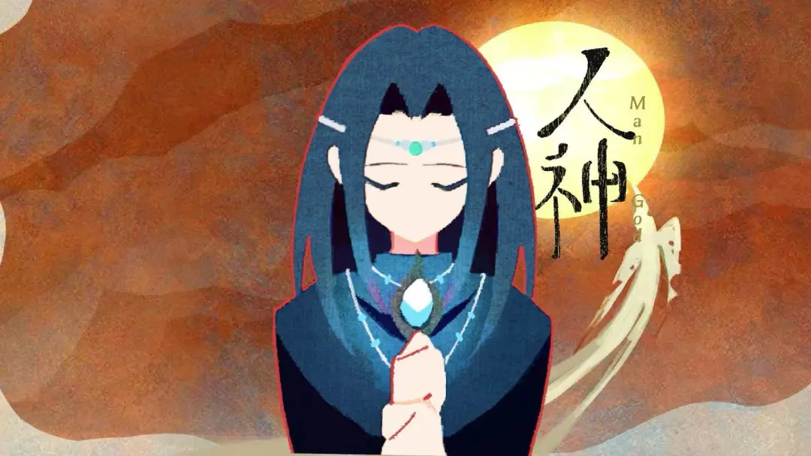

Work / Interests
I have been exploring small-scale game development projects during game jam events to better understand how systems, logic, and user interaction connect. Through experimenting with mechanics and simple prototypes, I focus on improving both technical implementation and structured problem-solving.
I also enjoy drawing and visual composition as a way to strengthen creativity and attention to detail. Working on digital sketches and character concepts helps me develop visual storytelling skills and maintain a creative balance alongside technical studies.
